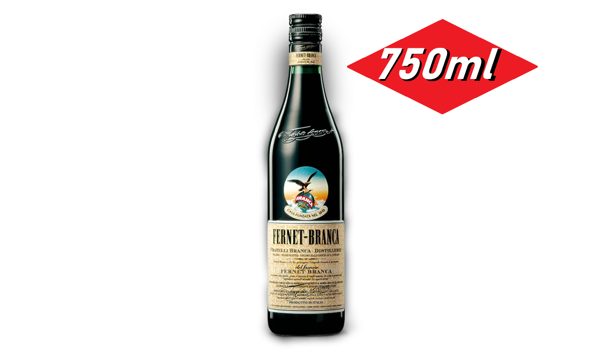
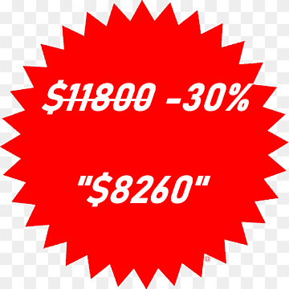

Super-ChinoProductosContacto
Don lee-Chan empezó en el negocio de la mercadería en 2022
con un pequeño almacen en el barrio,
gracias a sus excelentes precios y productos
consiguió inaugurar su primer supermercado en 2023
apodado "Super-Chino",
su fama se mantiene actualmente y es elegido y
recomendado por las familias argentinas.